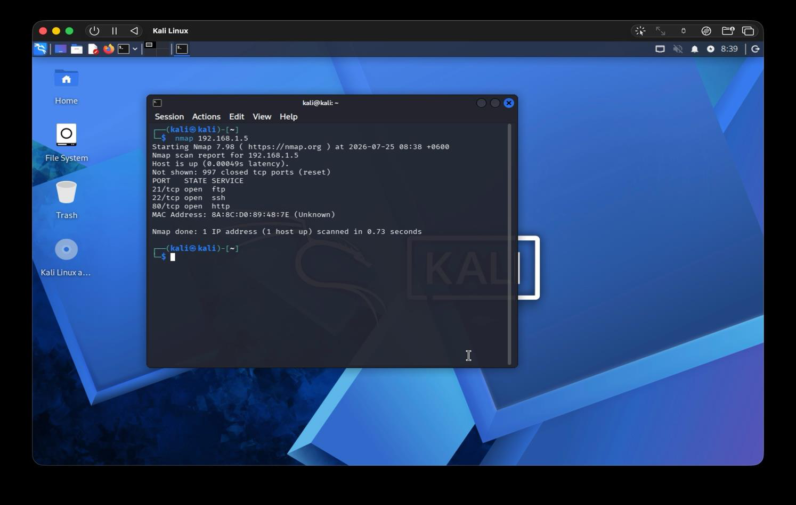

No prior information
Given nothing but an IP in an isolated virtual network, Nmap enumeration found three open ports: FTP, SSH, and HTTP, which was the entire starting point for everything that followed.
Featured Build
Given nothing but an IP in an isolated virtual network, Nmap enumeration found three open ports: FTP, SSH, and HTTP, which was the entire starting point for everything that followed.
The FTP service identified as ProFTPD 1.3.3c, a version with a known backdoor command-execution vulnerability. Metasploit's matching module got a shell, confirmed instantly with whoami returning root.
Wireshark packet capture, exploit output, and command history are all in the report. This is a walkthrough with proof at each step, not a plausible-sounding summary.
Screenshots


This was a course assignment with a simple premise: here's an IP address on an isolated virtual network, here's a Kali Linux attacker box, find out everything you can and see how far you can get. No hints, no prior knowledge of the target.
Nmap's initial scan found three open ports (FTP, SSH, HTTP), and a service/version scan identified the FTP daemon as ProFTPD 1.3.3c, a version with a well-documented backdoor vulnerability (CVE-2011-4130-adjacent command execution via a crafted response). Metasploit had a matching module; running it opened a reverse shell, and whoami confirmed root access on the first attempt.
From there the assessment went further than just "got a shell": packet capture with Wireshark during an FTP session recovered plaintext credentials, which led to cracking a non-system account's password to demonstrate credential reuse risk. The final report closes with concrete remediation: patch the outdated FTP service, apply network segmentation, and stop reusing passwords across accounts.
The value of this project for me wasn't "I ran a tool and it worked," it was connecting the dots: recon tells you what's running, version identification tells you what's vulnerable, and exploitation only works because the first two steps were done properly. That's the mindset that shows up everywhere else in how I build and secure software now.